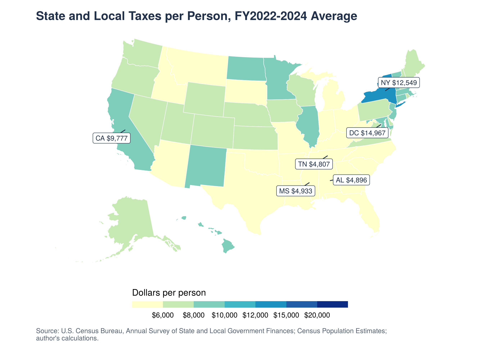
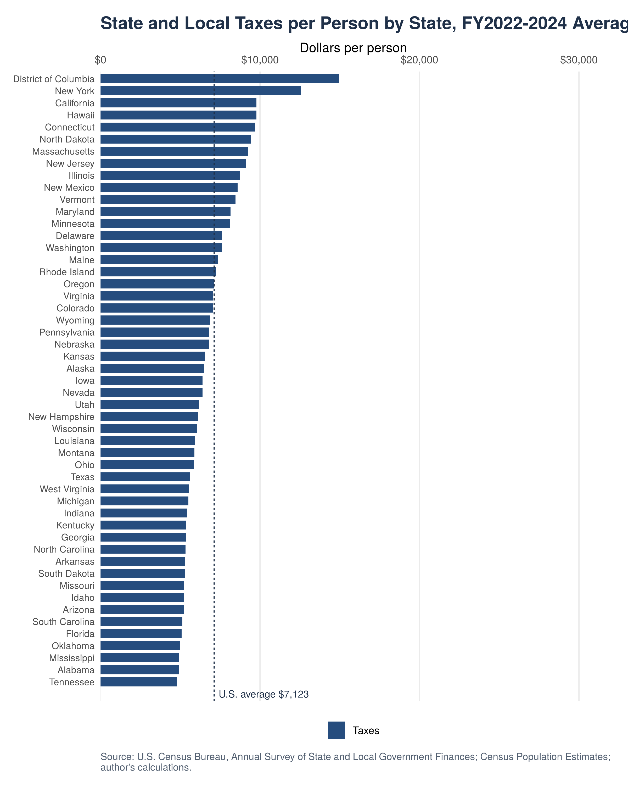
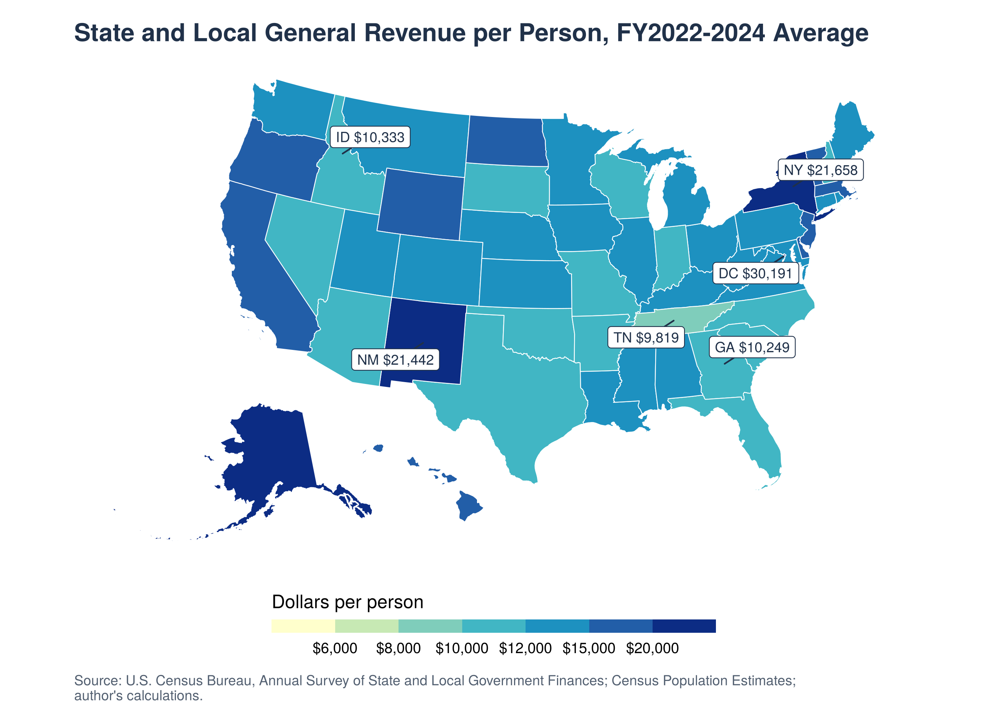
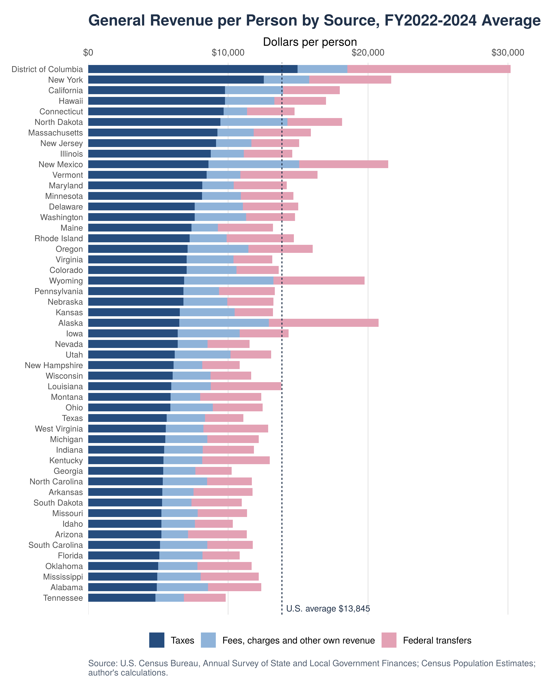
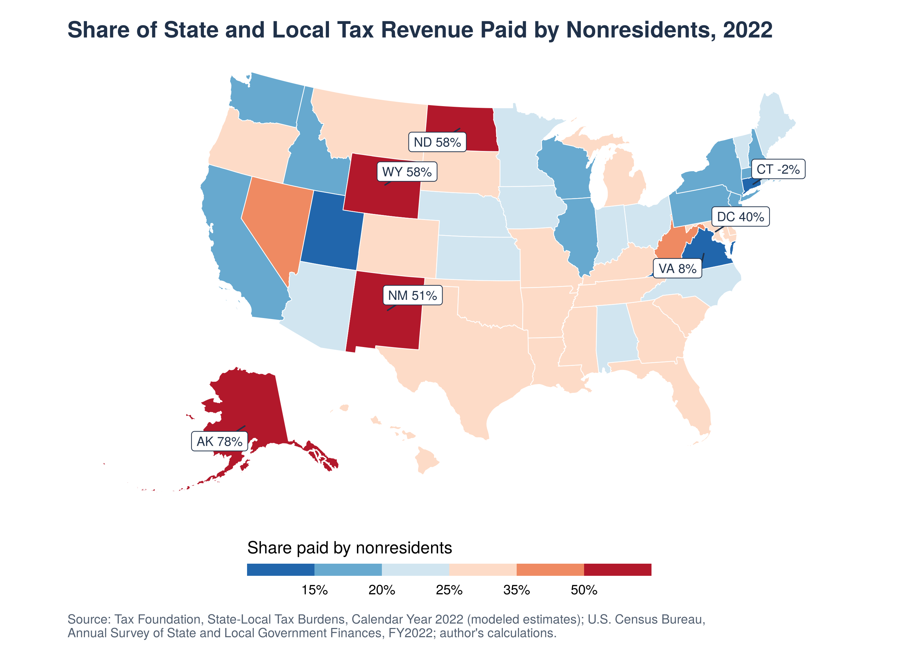

Low Taxes, Deep Pockets? Who Funds Your State?
Taxes vary widely across U.S. states, and many people weigh them when choosing where to live. Higher taxes raise the cost of living, but a better-funded government can also mean better roads, schools and hospitals. So do states that collect more tax really have richer governments? And beyond taxes, what else decides how much money a state government has?
How far apart are state tax bills?
Before asking whether governments differ, we need to know how much their taxes differ. I use the U.S. Census Bureau’s Annual Survey of State and Local Government Finances and combine state and local governments, because states split duties differently: some leave schools and police to counties and cities, which then levy their own taxes. Taxes per person is total state and local tax revenue divided by population, averaged over fiscal years 2022–2024. A higher number means governments collect more tax for each resident.

The range is wide. DC collects $14,967 per resident and New York $12,549, while Tennessee, Alabama and Mississippi collect under $5,000. The highest is 3.1 times the lowest. Even ignoring the extremes, a state at the 90th percentile collects 1.8 times as much as one at the 10th. The map shows a clear geography: high taxes cluster in the Northeast, along the West Coast and in Hawaii, and low taxes across the South and much of the Mountain West. A likely reason is income. Residents of the Northeast and West Coast earn more and own pricier homes, so similar tax rates raise more dollars, and many of these states also choose broader public services.

Does counting all revenue close the gap?
Taxes are not a government’s only money. If low-tax states make up the difference from other sources, the gap in total revenue should be much smaller than the gap in taxes. General revenue per person adds two sources to taxes: the government’s own non-tax revenue, such as fees, tuition, interest and natural-resource royalties, and federal transfers, mainly grants for Medicaid, highways and schools. It excludes utility and pension-fund income.

General revenue ranges from $9,819 per person in Tennessee to $30,191 in DC, followed by New York ($21,658), New Mexico ($21,442) and Alaska ($20,756). The gap barely narrows: the highest is still 3.1 times the lowest, and the 90th-to-10th percentile ratio falls only from 1.8 to 1.7. On the map, the Southeast stays lightest and the Northeast stays dark.

Federal money does not fill the gap. The ten highest-tax states receive about $4,990 per person from Washington, compared with $3,470 for the ten lowest. Medicaid, the largest federal grant, pays a share of whatever each state spends on it, so states that raise more tax and spend more on health care also draw more federal dollars. In dollars, the gap between those two groups grows from about $5,100 per person in taxes to about $7,400 in total revenue. For most of the South, low taxes do mean smaller government budgets.
The map also reveals one clear exception. Alaska, Wyoming and New Mexico, which rank between 10th and 25th on taxes, turn dark and jump into the top five on total revenue. Their own non-tax revenue is about $6,400 per person, roughly twice the U.S. average of $3,060, largely from oil and gas royalties. Their budgets are large, yet their tax bills look ordinary. That raises a last question: who actually pays the taxes they collect?
Who actually pays the taxes?
Some taxes fall on people who live elsewhere, such as a hotel tax in Las Vegas or a tax on oil sold across the country. The Tax Foundation estimates how much tax each state’s residents pay to their own state. Comparing that with what the state actually collected per resident in 2022 gives the share of tax revenue paid by nonresidents: 0% means residents pay everything, and 50% means outsiders pay half.

Connecticut’s −2% reflects differences between Tax Foundation’s calendar-year estimates and Census fiscal-year collections, not an actual negative share paid by nonresidents.
In the median state, about a quarter of tax revenue comes from nonresidents. The energy states stand far above that: about 78% in Alaska, 58% in Wyoming and North Dakota, and 51% in New Mexico. DC (40%) and Nevada (37%) follow. At the other end, high-tax states such as California, New York and Illinois collect less than 20% from outsiders. The map’s red band, running from the northern Plains through the Mountain West, matches where oil, gas and coal are produced. Taxes on extracting those resources are built into the price of energy that people nationwide buy, while DC and Nevada draw on commuters, tourists and casinos.
What the map tells us
Mostly yes: a state that collects more tax per person really does have more money to spend, and counting fees and federal grants barely changes that. Federal transfers, if anything, flow more to high-tax states. The exception is the energy states, whose governments are among the best funded in the country while outsiders pay much of their tax bill. For anyone comparing states, a low tax bill can mean either a smaller government, as in much of the South, or a government funded by oil, as in Alaska and Wyoming, whose budgets rise and fall with energy prices.
One caution, though: these are nominal dollars, not adjusted for differences in living costs, and the nonresident shares rest on Tax Foundation’s modeled estimates for a single year.
Sources and replication. Data come from the U.S. Census Bureau’s Annual Survey of State and Local Government Finances and Population Estimates, Census state boundary files, and the Tax Foundation’s State-Local Tax Burdens, Calendar Year 2022. The R scripts, data snapshot and replication instructions are available in the GitHub repository. See the README to reproduce the figures and results.